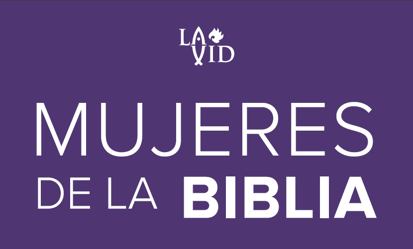

ESTUDIO 12:
LA SAMARITANA: SU ENCUENTRO CON EL AGUA VIVA
BASE BÍBLICA.
Juan 4:3-8
3 Salió de Judea y partió otra vez para Galilea.
4 Y tenía que pasar por Samaria.
5 Llegó, pues, a una ciudad de Samaria llamada Sicar, cerca de la parcela de tierra que Jacob dio a su hijo José;
6 y allí estaba el pozo de Jacob. Entonces Jesús, cansado del camino, se sentó junto al pozo. Era como la hora sexta.
7 Una mujer de Samaria vino a sacar agua, y Jesús le dijo: Dame de beber.
8 Pues sus discípulos habían ido a la ciudad a comprar alimentos.
INTRODUCCIÓN.
En tiempos de Jesús, Israel estaba dividido en tres regiones: Judea en el sur, Galilea en el norte y Samaria que ocupaba la zona central, en medio de las dos. Estas divisiones reflejaban las grandes diferencias culturales y religiosas que había entre judíos, samaritanos y galileos.
Los samaritanos eran una mezcla de judíos con personas de otras nacionalidades. Su historia dio inicio cuando el rey de Asiria conquistó el reino del norte, transportó a la mayoría de los judíos a sus dominios, y pobló la región con gente que trajo de otros lugares. Esto produjo una mezcla racial, pero también religiosa, porque estos pueblos trajeron sus dioses y prácticas idolátricas y las incorporaron al culto al Señor.
Cuando regresaron del cautiverio, estos samaritanos fueron los que se opusieron a la reconstrucción del templo (Esdras 4:3-4). Con el tiempo construyeron su propio templo en Gerizim.
Aceptaban lo revelado por Moisés en el Pentateuco como la Escritura, pero rechazaban los salmos y los profetas.
El desprecio que sentían los judíos por ellos provocó que evitaran a toda costa pasar por Samaria (Juan 4:9). Jesús rompió con esto deliberadamente. Juan 4:4: “Y tenía que pasar por Samaria”. El propósito de Jesús requería que pasara por Samaria.
La hora que cambió su vida
Hay varias situaciones que llaman la atención en el encuentro de Jesús con la mujer samaritana: es inusual ver que Jesús estuviera solo; que pudiera sentirse cansado o sediento; que escogiera intencionalmente un lugar e iniciar una conversación con una mujer y además samaritana; que haya pedido a sus discípulos que fueran a comprar comida, cuando más adelante en el mismo evangelio de Juan, sabemos cómo Jesús multiplicó los panes y peces para alimentar multitudes.
Definitivamente Jesús preparó todo para encontrarse en el lugar y hora perfecta, con una mujer que lo necesitaba urgentemente y a quien habría de revelarse por primera vez como el Mesías. Los tiempos de Dios son perfectos (Salmos 40:1).
Cuando la mujer llegó aquel día al pozo, a la hora sexta (12 del mediodía), era la hora menos propicia para hacerlo, tal vez para no encontrarse con nadie. Esta mujer no tenía idea de lo que sucedería, pues iba en camino a tener un encuentro con el mismo Hijo de Dios, que cambiaría su vida y la de su pueblo.
Jesús inicia la conversación: “Dame de beber”. Esto la hizo sentir importante, ya que era ella la que tenía los medios para sacar agua del pozo. Jesús se acerca con toda humildad, no buscando impresionar con su majestad y gloria; buscaba acercarse a ella y no quería atemorizarla.
Juan 4:9: “Entonces la mujer samaritana le dijo: ¿Cómo es que tú, siendo judío, me pides de beber a mí, que soy samaritana?”. Aunque esto era una realidad, Jesús nos muestra que las “buenas noticias” son para todos, sin importar la raza, religión, sexo o cualquier otro aspecto; todos por igual estamos necesitados de salvación. Esta mujer se dio cuenta de que Él no era un judío como los demás.
A pesar de la negativa de ella, Jesús continúa la conversación ofreciéndole un agua mejor. Juan 4:10: “Respondió Jesús y le dijo: Si tú conocieras el don de Dios, y quién es el que te dice: ‘Dame de beber’, tú le habrías pedido a Él, y Él te hubiera dado agua viva” (Jeremías 2:13). El Señor comienza a hablarle acerca de las realidades espirituales: el don de Dios y el agua viva. Cristo estaba ofreciendo algo realmente importante, a pesar de que se negó a darle agua del pozo. ¡Ella no tenía idea del regalo que Jesús le estaba ofreciendo! Él estaba hablando de vida eterna con todas sus bendiciones inagotables.
Aunque esta agua está disponible para todos nosotros de forma gratuita, solo aquellos que la piden se podrán apropiar de ella (Juan 7:38).
La mujer samaritana comienza a percibir autoridad en Jesús, y adopta una actitud defensiva: “Señor, no tienes con qué sacarla, y el pozo es hondo; ¿de dónde, pues, tienes esa agua viva? ¿Acaso eres tú mayor que nuestro padre Jacob?” (Juan 4:11-12). En realidad, Jesús buscaba demostrarle que, efectivamente, Él sí era más grande que Jacob.
Juan 4:13-15: “Respondió Jesús y le dijo: Todo el que beba de esta agua volverá a tener sed, pero el que beba del agua que yo le daré, no tendrá sed jamás, sino que el agua que yo le daré se convertirá en él en una fuente de agua que brota para vida eterna. La mujer le dijo: “Señor, dame esa agua, para que no tenga sed ni venga hasta aquí a sacarla”. Cristo le está diciendo que el agua que Él le ofrece es infinitamente mejor que la del pozo de Jacob. Jesús hace una promesa universal, ya que solo Él puede llenar plenamente el vacío de nuestro interior y darnos una felicidad duradera, aunque esto solo ocurrirá hasta que le entreguemos nuestras vidas (Juan 7:37-39). Esta oferta sigue vigente para todos los hombres y mujeres, cualquiera que sea su condición (Apocalipsis 22:17).
La mujer le dijo: “Señor, dame esa agua, para que no tenga sed ni venga hasta aquí a sacarla”. Parece que ella ya estaba entendiendo, pero en realidad no dejaba de pensar en el agua física, cuando Jesús le estaba explicando verdades espirituales y eternas. Es un buen ejemplo de cómo el hombre natural se resiste a entender la Palabra de Dios.
La revelación que cambió su vida
Él le dijo: “Ve, llama a tu marido y ven acá”. Ella se pone en guardia y responde: No tengo marido. Ella tenía miedo de ser expuesta y dice una media verdad. Pero Jesús le revela su condición: “Bien has dicho: ‘No tengo marido’, porque cinco maridos has tenido, y el que ahora tienes no es tu marido; en eso has dicho la verdad” (Juan 4:16-18). El Señor va directo, pero no la acusa de mentir, sino la elogia por decir la verdad, aunque no la dijo completa. Jesús puso al descubierto su vida moral. Y a pesar de eso, lejos de rechazarla y castigarla, ¡le ofrecía el agua de vida!
La mujer no niega lo que Jesús le ha dicho, y no oculta su sorpresa y admiración: ¡Tú debes ser un profeta! Había empezado a sospechar que Él era alguien importante. En ese momento desvía la conversación de su situación personal, a una disputa teológica. Juan 4:20: “Nuestros padres adoraron en este monte, y vosotros decís que en Jerusalén está el lugar donde se debe adorar”. Quería saber, dónde, por qué y de qué manera es como se debe adorar.
“Dios es espíritu, y los que le adoran deben adorarle en espíritu y en verdad” (Juan 4:24). Con estas maravillosas palabras de Jesús quedó eliminado todo el peso de la discusión y de la tradición, haciendo que careciese de importancia. Ante la impresión de estas palabras, ella responde: “Sé que el Mesías viene; cuando Él venga nos declarará todo”. El Espíritu Santo estaba trabajando en su corazón: Dios el Padre atrayéndola a Cristo, para revelarle la verdad que ningún ojo había visto y ningún oído había escuchado.
Ahora Jesús estaba listo para hacer la más grande revelación que persona alguna puede recibir: “Jesús le dijo: Yo soy, el que habla contigo”. ¡Jesús revela por primera vez su identidad! Esta es la más singular, directa y explícita declaración mesiánica que Jesús haya hecho. No lo hizo a los judíos, ni a los sabios, ni a los dirigentes, si siquiera a los piadosos, sino a una mujer con dudoso pasado, perteneciente a una nación que todos despreciaban. Esta revelación da testimonio de la fe de ella.
Cuando llegaron los discípulos, se quedaron mudos del impacto de la escena y no se atrevieron a hacerle preguntas (Juan 4:27).
La primera mujer evangelista
Cuando la mujer oyó estas verdades, no se las guardó, sino que dejó su cántaro y fue a la ciudad a compartirle a los suyos. Su corazón rebosaba tanto de alegría por todo lo que había escuchado, que sintió urgencia de comunicárselo a otros: “Fue a la ciudad y dijo a los hombres: Venid, ved a un hombre que me ha dicho todo lo que yo he hecho. ¿No será éste el Cristo?” (Juan 4:28-29). La samaritana compartió su testimonio y con mucha sutileza despertó la curiosidad de los samaritanos. Ella sabía que todos conocían quién era, conocían su pasado y que no tenía ninguna autoridad, y menos en temas espirituales, para hablarles, pero si conseguía que ellos mismos tuvieran su encuentro con Él, creerían que todo lo que les dijo era verdad, como sucedió unos días después.
Cuando los samaritanos se encontraron con Jesús, quisieron dejar claro que, aunque inicialmente se acercaron por el testimonio de la mujer y los cambios que vieron en ella, finalmente creyeron por su experiencia personal.
Reconocieron que Él era el Mesías, no solo para los judíos sino para el mundo entero (Juan 4:39-42). Dentro de los tres siguientes años se fundó la iglesia. Su influencia se extendió rápidamente desde Jerusalén a Judea y Samaria y de allí hasta lo último de la tierra… por esto le era “necesario pasar por Samaria”.
PREGUNTAS DE REFLEXIÓN
- ¿Fue casualidad que Jesús mandara a los discípulos por alimentos? (Romanos 8:28-29)
- ¿Qué hizo la mujer samaritana para que Jesús se encontrara con ella en el pozo? (1 Samuel 16:7)
- ¿El evangelio es para todos? (Gálatas 3:28)
- ¿Qué hizo el “Agua Viva” en la samaritana? (Salmos 32:1)
- Dejar el cántaro en el pozo e ir a compartir ¿qué representa? (2 Corintios 5:17)
CONCLUSIÓN
Jesús, aunque existía en forma de Dios, se despojó a sí mismo tomando forma de siervo, haciéndose semejante a los hombres. Vino hasta nosotros donde estábamos tratando inútilmente de saciar nuestra necesidad; vino a esta tierra donde éramos sus enemigos, donde iba a ser rechazado y crucificado por nosotros. Pero le era necesario venir para darnos esa “Agua Viva”, ese manantial inagotable de vida que nos libera de toda culpa, que transforma, da dirección y sentido a nuestras vidas. Esta es la vida abundante que inicia aquí en la tierra y continúa por la eternidad.
Si ya la hemos recibido, vayamos y contemos las maravillas que Él ha hecho con nosotros. Invita a otros a que vengan, vean y tengan su propio encuentro con Jesús. Si no lo has hecho, hoy es un buen día para hacerlo.